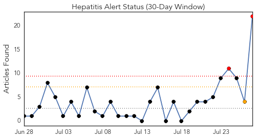
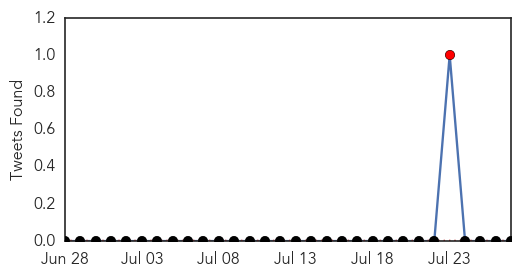
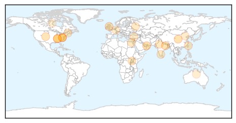
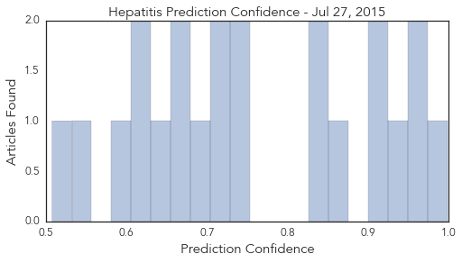

Hepatitis
30-Day Web Trend
2 alerts, 1 warnings

30-Day Twitter Trend
1 alerts, 0 warnings

Article Locations
Article Confidences
Top Articles:
- 0.998
- Lettuce, livers, berries and other leading sources of food poisoning
- 0.960
- Today, July 28, is World Hepatitis Day
- 0.953
- WARNING: Tennessee releases "Public Health Advisory" on Hepatitis C
- 0.936
- Tennessee: Hepatitis C cases triple prompting health advisory
- 0.912
- Hepatitis cure costs a fortune
- 0.912
- 2015 World Hepatitis Day: Preventing Viral Hepatitis Infections
- 0.856
- Charities to launch hepatitis C testing campaign
- 0.840
- State Health Department warns about Hepatitis C virus
- 0.829
- Opioid tampering by providers who use drugs increases risk for HCV transmission
- 0.752
- Many hepatitis carriers who need treatment not getting it: official
- 0.730
- WHO injection safety drive to help check hepatitis
- 0.710
- Hepatitis, a silent killer, with symptoms appearing late
- 0.707
- On World Hepatitis Day, Millions to Hear Messages of Testing and Treatment, not Stigma
- 0.696
- Free hepatitis-C treatment for poor on cards
- 0.679
- Russia's growing epidemic of chronic hepatitis C
- 0.657
- Should the state disclose which Maine schools face disease outbreaks?
- 0.638
- Tattoo, body piercing can put you at hepatitis risk
- 0.620
- WHO observes World Hepatitis Day with statistics
- 0.615
- More than 3,000 people in Luxembourg with Hepatitis C
- 0.584
- Living with hepatitis: Don’t be afraid
- 0.555
- Herpes and other diseases affecting native mammal population, study finds
- 0.508
- Prevention of viral hepatitis
Top Tweets:
-
No tweets found for Jul 27, 2015
Ebola
30-Day Web Trend
3 alerts, 0 warnings

30-Day Twitter Trend
2 alerts, 0 warnings

Article Locations

Article Confidences

Top Articles:
- 0.999
- Ebola Virus Disease not yet defeated in West Africa
- 0.999
- Malibu Doctor Treating Ebola Patients in Sierra Leone
- 0.999
- World Bank Group Pledges Additional $100 million to Speed New Health Workers to Ebola-stricken Countries
- 0.999
- It’s been a year: Doctor-Patient reflects on winning battle against Ebola
- 0.997
- Vaccines
- 0.994
- Noguchi Ebola Tests Results Trusted – Health Minister
- 0.984
- Salesian Missions launches emergency fund to assist efforts to contain deadly Ebola outbreak in West Africa, issues urgent appeal for donations
- 0.965
- Ebola Survivor Writes a Book about His Experience
- 0.964
- Imperfect vaccines could make viruses more dangerous, at least in chickens
- 0.941
- Leaky Vaccines Enhance Spread of Deadlier Chicken Viruses – Phenomena
- 0.923
- President Sirleaf Commends Healthcare Workers in Bomi County; Visits Quarantined West Point
- 0.904
- Doctor who had Ebola, wife share struggle to survive
- 0.904
- Ebola nurse honoured by Prime Minister
- 0.869
- E-Mist’s African initiative thrusts Fort Worth company back into spotlight
- 0.856
- Brantlys share struggle to survive Ebola
- 0.850
- Liberia Apologise to Nigeria Over Patrick Sawyer's Importation of Ebola to Nigeria
- 0.842
- Neoliberal Ebola: palm oil, logging, land grabs, ecological havoc and disease
- 0.840
- Neoliberal Ebola: palm oil, logging, land grabs, ecological havoc and disease
- 0.751
- LIBERIA: Ebola Discovered, Six Cases Reported Five Of The Victims Are Reported Deadd
- 0.661
- Palor Conteh fears prevalence of illegal burials
- 0.533
- Liberia Will Forever Be Grateful To Nigeria - Envoy
- 0.518
- Liberians Mark 168 Years of Independence
Top Tweets:
- 0.972
- King Salaman de BANLIEUZ'ART OFFICIEL a un petit message pour ebola ! Africa Stop Ebola http://t.co/GBFjFdl4Mo
- 0.914
- Quels systèmes de santé pour lutter contre Ebola et les autres urgences en Afrique subsaharienne ? http://t.co/tX5TvqIyRW
- 0.913
- RT: Core public health principles were used during the CDC response to the Ebola outbreak. Find out how. RoadtoZero https://t.co/…
- 0.788
- RT: .@MSF AfricaStopEbola "ce concours de chant est important car il faut à tout prix vaincre Ebola" TikenJahFakoly à Conakr…
- 0.759
- Must Read:-Sierra Leone begins treating Ebola patients with survivors' Plasma! http://t.co/1Y1R9muqUh Africaagainstebola
- 0.644
- RT: AfricaStopEbolaMSF merci aux artistes locaux et africains pour labmobilisation cintre Ebola Tiken Jah Fakoly ala blue zon…
- 0.625
- FACT: The ASEOWA health workers were deployed with-in a month of the Ebola crisis Africaagainstebola @WorldVisionEU
- 0.597
- RT: In latest update, @WHO reports no new Ebola cases in Liberia https://t.co/132mFYWj7J EbolaResponse http://t.co/7WhCgzrNUJ
- 0.588
- N'oubliez pas demain c'est la demi-finale du concours Africa Stop Ebola, likez et partagez notre page facebook... http://t.co/3wvX5zyuXw
- 0.541
- Ebola quarantine in SierraLeone leaves people without food hunger http://t.co/R30Run4LoF
- 0.500
- Joy, tears: Nancy Writebol talks about her journey on anniversary of Ebola ... - Winston-Salem Journal http://t.co/MsqODTsFbl ebola EVD